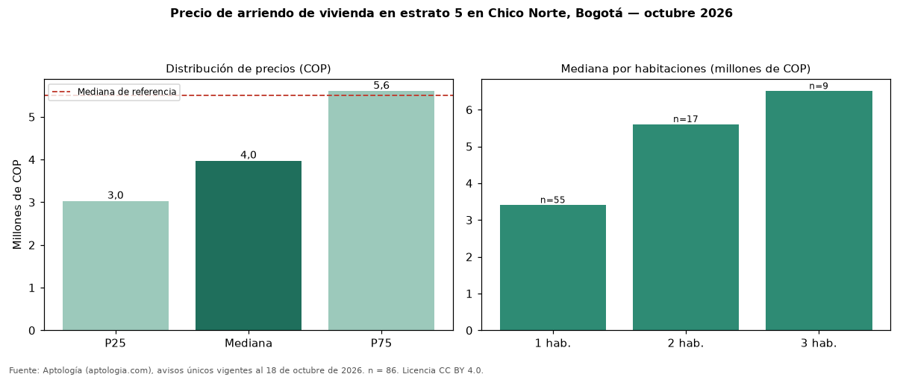

Precio de arriendo de vivienda en estrato 5 en Chico Norte, Bogotá — octubre 2026
COP 3.970.000 al mes es la mediana de arriendo de vivienda en estrato 5 en Chico Norte, Bogotá, según 86 avisos únicos. Eso es 28 % menos que la mediana de toda la oferta de arriendo en Chico Norte (COP 5.508.000). Por metro cuadrado, la mediana es COP 67.833/m² (−11 % frente a COP 76.248/m²). Cruzando con la oferta de venta equivalente, la rentabilidad bruta implícita es 9,4 % anual. Por habitaciones: 1 habitación, COP 3.400.000 (n = 55); 2 habitaciones, COP 5.600.000 (n = 17); 3 habitaciones, COP 6.500.000 (n = 9). El área mediana es 60 m² (referencia: 78 m²). El rango intercuartílico va de COP 3.025.000 a COP 5.600.000 (razón 1,9). Datos abiertos CC BY 4.0 de Aptología; fuente y búsqueda de inmuebles: https://www.aptologia.com/estrato-de/bogota/chico-norte. Archivos: PDF de 2 páginas, CSV con las cifras y gráfica PNG.

| Avisos únicos | 86 |
|---|---|
| Percentil 25 | COP 3.025.000 |
| Mediana | COP 3.970.000 |
| Percentil 75 | COP 5.600.000 |
| Mediana por m² | COP 67.833 |
Fuente: avisos vigentes de portales inmobiliarios recopilados por Aptología, deduplicados (mínimo 30 avisos únicos por celda). Precios pedidos, no cerrados. Fecha: 2026-10-18.